|
  
  
 
 
     
     
|
LAST UPDATE: December 11, 2015 |
| SPECIFICATIONS | PHOTOGRAPHS (Click on the pictures for an enlarged photo) |
 Designation: SSN Length: 377 ft Beam: 34 ft Displacement: 7,800 tons Speed: 28+ knots Crew: 134 Propulsion: GE S9G Nuclear Reactor, 30Mw, 1 shaft Max Depth: Greater than 800 ft. Armament: - 12 x VLS Tomahawk Missiles - 4 X 533mm Tubes for 26 ADCAP Mk48 Torpedos, MK 60 Captor Mines, & Sub-Harpoon missiles. Ships in class: 12 Commissioned (C) 01 Launched (L)br> 05 Building (B) 07 Ordered (O) 17 Planned (P) --- Block I --- (Initial Block)To date, twelve Virginia class submarines have been commissioned since 2003 when the USS Virginia, SSN-774, was commissioned into the United States Navy. The latest is the USS John Warner, SSN-785, which was commissioned late in 2015. 35 more vessels are planned, with various inprovements planned out over the years. These are the most modern and capable nuclear powered attack submarines on earth, and the United states Navy is building them in numbers. The Virinia class nuclear attack submarines (SSN) are the latest nuclear attack submarines for the US Navy. They are considered the most capable, quiet, and effect nuclear atack submarines in the world, though the United Kingdom Astute Class SSNs are very close in capabilities and quietness. Capabilities: The Virginia class nuclear attack submarines are designed for a broad range of flexible open-ocean and littoral missions. This is accomplished by carrying out the following seven mission goals as required:
The Virginia class incorporates several unique innovations. Instead of periscopes, the subs have a pair of extendable photonics masts outside the pressure hull. Each contains several high-resolution cameras with light-intensification and infrared sensors, an infrared laser rangefinder, and an integrated Electronic Support Measures (ESM) array. Signals from the mast sensors are transmitted through fiber optic links through signal processors to the control center. The subs also make use of pump-jet propulsors for quieter operations. An advanced electromagnetic signature reduction system built will first appear on the USS California (SSN-781). Through an advanced interfacing software system this will aloow the crew to monitor and reduce the vessels electromagnetic signatures as needed. This capability will be refitted into the earlier seven submarines of the class The Virginia-class is built through an industrial arrangement designed to keep both GD Electric Boat and Northrop Grumman Newport News in the submarine-building business. These two U.S. shipyards are the only two capable of building nuclear-powered submarines. Under the arrangement, the Newport News facility builds the stern, habitability & machinery spaces, torpedo room, sail and bow, while Electric Boat builds the engine room and control room. The facilities alternate working on the reactor plant as well as the final assembly, test, outfit and delivery. In order to rising costs and get each vessel's price down to $2 billion per submarine in FY-05 dollars, the US Navy instituted a cost-reduction program to save approximately $400 million in costs from each submarine. The project was dubbed "2 for 4 in 12," referring to the Navy's desire to buy two boats for $4 billion in FY-2012. As directed by Congress, the Navy started buying two boats a year in FY-2011. Officials were afriad that this would mean that the first two vessels would not meet the cost goals, but the program manager indicated at a conference on March 19, 2008, that the program was only $30 million away from achieving the $2 billion price goal, and would reach that target on schedule, which it did. Block V SSN/SSGN Hybrid Boats: The US Navy's total requirement is for 30+ of the pure SSN boats, but at least seventeen of an enlargened, hybrid SSN/SSGN are also planned. These last boats will replace the four large Ohio class SSGN vessels. They will be equipped with a large insert (70 ffeet long) aft of the sail where a new Virginia Payload Module (VPM). The VPM will include th e addition of four VPTs (explained later when discussing the Blick III boats below). This will add another 24 missile tubes so these new SSN/SSGN hybrods will each have the capacity of carrying 36 vertical launch curise missiles or other munitions or remotely operated underwater vehicles. The BLock V and on boats will be 70 feet longer and weigh an additional 6-8,000 tons. Construction: In 2003, the US Navy placed a bulk-buy contract for the first five Virginia class submarines. In January 2004, it placed a multi-year contract for the seocnd five. Then in December 2008, the US Navy signed a $14 billion contract with General Dynamics and Northrop Grumman, to supply eight more submarines. The contractor delivered one submarine in each of fiscal 2009 and 2010, then two submarines on each of fiscal 2011, 2012, 2013, 2014, and 2015. By 2018, these contracts will bring the Navy's Virginia-class fleet to 18 submarines. On 2 June 2012, the Navy christened the USS Mississippi (SSN-782), the last of the Block II submarines. This boat was delivered almost a full year ahead of schedule and tens of millions of dollars under budget. The Block II boats were built in four sections, compared to the ten sections of the Block I boats. This increases cost saving and optimizes construction time and efficency, and will continue through the remaining blocks. The USS North Dakota, SSN-784 is the 1st Block III boat and she was laid down in May 2012 waslaunched in the summer of 2013 and commissioned in 2014. The Block III boats add a Large Appeture Bow sonar (LAB) and two new Viringia Payload Tubes (VPT) which replace the ealier 12 individual VLS tubes with two modules of six tubes each which are capable of carrying future vetrtically launched munitions. The complete, current schedule for builds from SSN-774 through completion is:

Design: The engineering, design and build teams at Electric Boat in partnership with the Naval Sea Systems Command, NAVSEA, of the US Navy have used extensive CAD/CAE simulation systems to optimise the design of the submarine. The hull structure contains structurally integrated enclosures, which accommodate standard 19in and 24in width equipment for ease of installation, repair and upgrade of the submarine's systems. The submarine is also fitted with modular isolated deck structures. The submarine's control suite is equipped with computer touch screens.The submarine's steering and diving control is via a four-button, two-axis joystick. The noise level of the Virginia is equal to that of the US Navy Seawolf, SSN 21, with a lower acoustic signature than the Russian Improved Akula Class and fourth-generation attack submarines. To achieve this, the Virginia incorporates newly designed anechoic coatings, isolated deck structures and a new design of propulsor. Command system: The desing of the command and control systems module has been conducted by a team led by Lockheed Martin Naval Electronics & Surveillance Systems – Undersea Systems (NE&SS-US) of Manassas, Virginia. It integrates all of the vessel's systems – sensors, countermeasures, navigation, weapon control, and is based on open system architecture (OSA) with Q-70 colour common display consoles. Weapon control are provided by Raytheon with a derivative of the CCS mk2 combat system, the AN/BYG-1 combat control system. The Virginia has two mast-mounted Raytheon submarine high data rate (sub HDR) multi-band satellite communications systems that allow simultaneous communication at super high frequency (SHF) and extremely high frequency (EHF). Weapon systems: All Virginia class submarines are equipped with 12 vertical launch missile tubes and four 533mm torpedo tubes. The vertical launch system has the capacity to launch 16 Tomahawk submarine-launched cruise missiles (SLCM). There is capacity for up to 26 mk48 ADCAP mod 6 heavyweight torpedoes and sub harpoon anti-ship missiles to be fired from those torpedo tubes. Mk60 CAPTOR mines may also deployed. An integral lock-out/lock-in chamber is incorporated into the hull for special operations. The chamber can host a mini-submarine, such as Northrop Grumman's Oceanic and Naval Systems Advanced SEAL Delivery System (ASDS), to deliver special warfare forces such as SEAL teams or Marine Force Recon units for counter-terrorism or localised conflict operations. Propulsion: The main propulsion unit is the GE pressure water reactor S9G, designed to last as long as the submarine, two turbine engines with one shaft and a United Defense pump jet propulser, providing 30MW (40,000HP). The submerged speed is in excess of 25kts. Sensors: The Virginia Class sonar suite provides 360 degree, total coverage. This is accomplished by including bow-mounted active and passive arrays, a stern wide aperture passive array, high-frequency active arrays on the keel and fin, TB 16 towed array and the Lockheed Martin TB-29A thinline towed array, with the AN/BQQ-10(V4) sonar processing system. A Sperry Marine AN/BPS-16(V)4 navigation radar, operating at I-band, is also fitted. Each submarines has two Kollmorgen AN/BVS-1 photonic masts, rather than optical periscopes. Sensors mounted on the non-hull-penetrating photonic mast include LLTV (low-light TV), thermal imager and laser rangefinder. The mast is the Universal Modular Mast developed by Kollmorgen and its Italian subsidiary, Calzoni. The Boeing LMRS long-term mine reconnaissance system is deployed on the Virginia Class. LMRS includes two 6m autonomous unmanned underwater vehicles, an 18m robotic recovery arm and support electronics. Northrop Grumman Electronic Systems is supplying the lightweight, wide-aperture array (LWWAA) system based on fibre-optic arrays, instead of traditional ceramic hydrophone sensors. LWWAA is a passive ASW sonar system which consists of three large array panels mounted on either side of the submarine's hull. Countermeasures: The entire Virginia Class is fitted with the AN/WLY-1 acoustic countermeasures system being developed by Northrop Grumman, which provides range and bearing data, and the mast-mounted AN/BLQ-10 electronic support measures (ESM) system from Lockheed Martin Integrated Systems. AN/BLQ-10 provides full spectrum radar processing, automatic threat warning and situation assessment. |
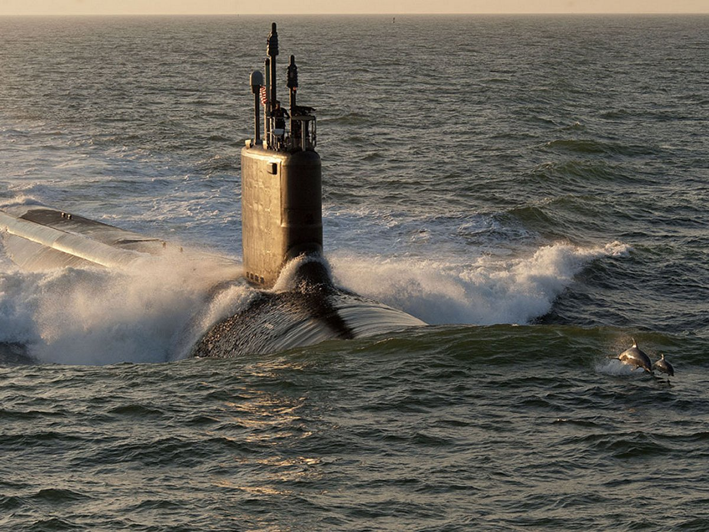 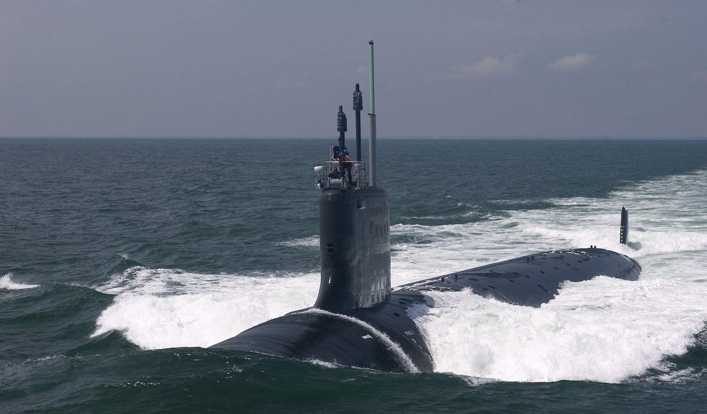 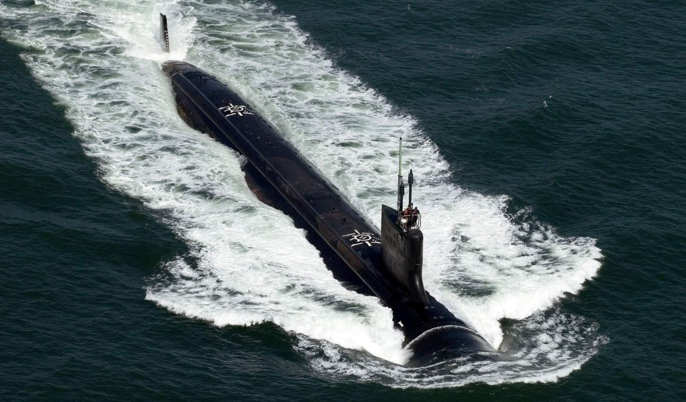 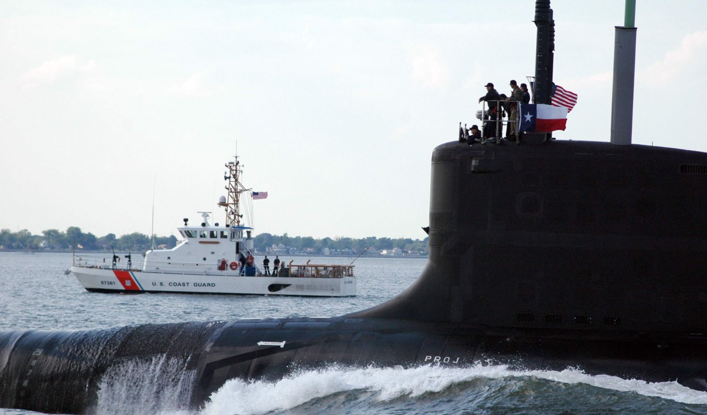 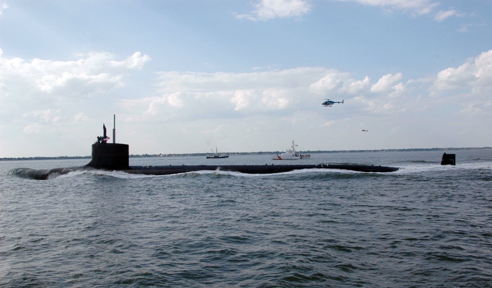 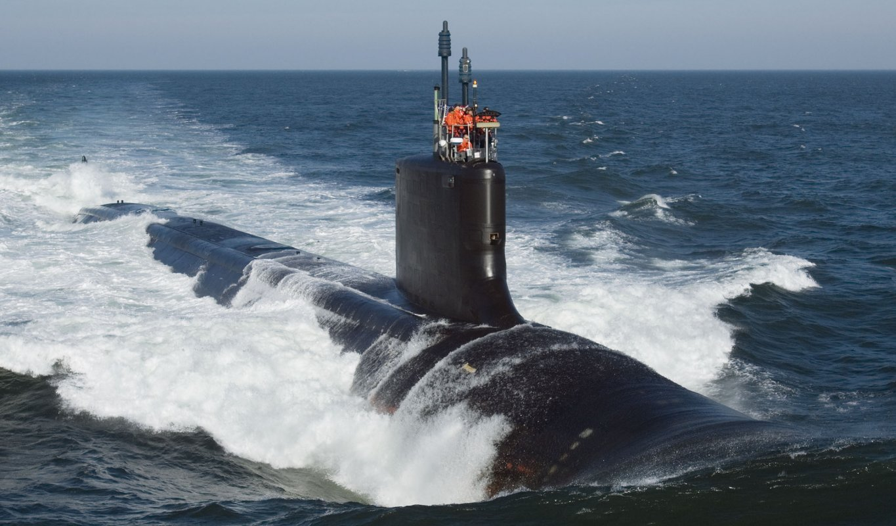 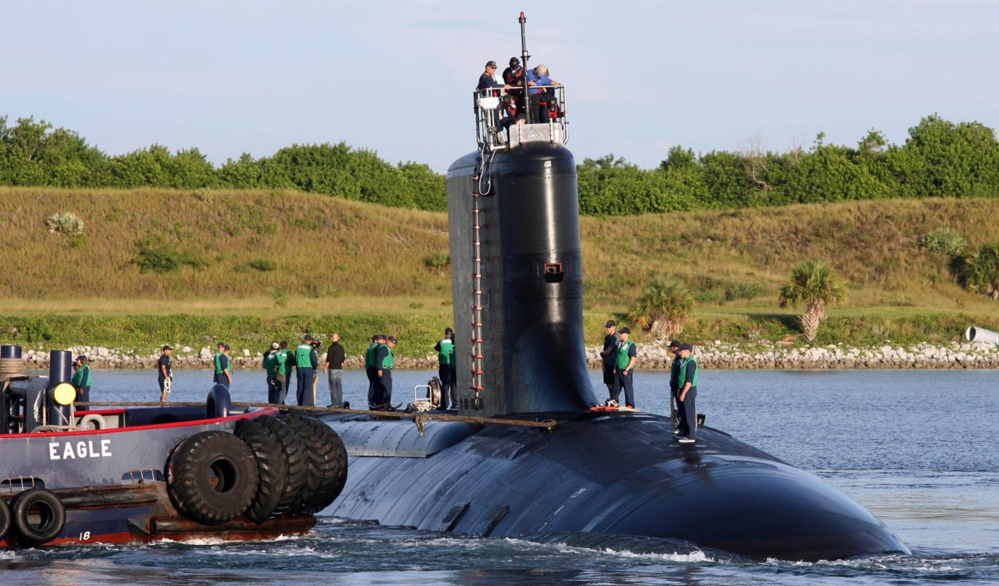 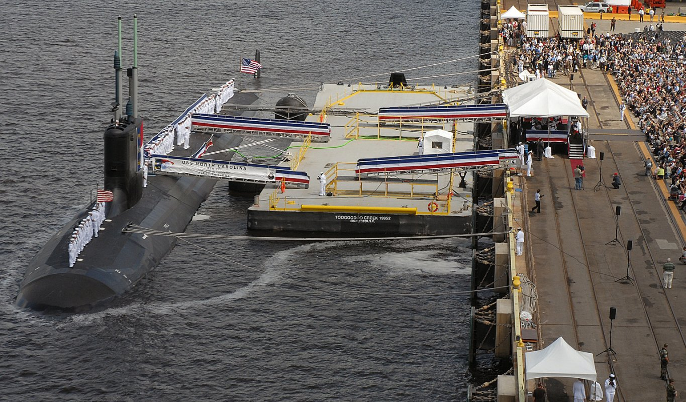 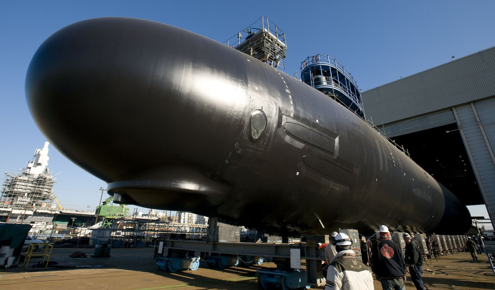 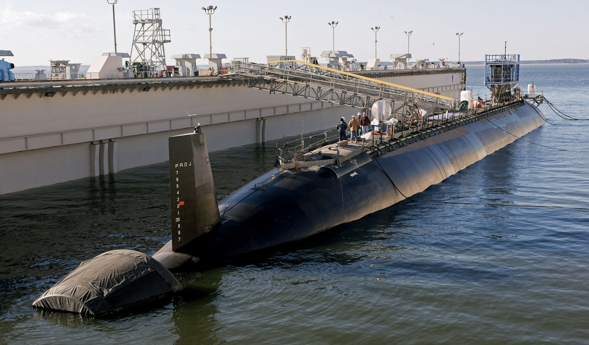 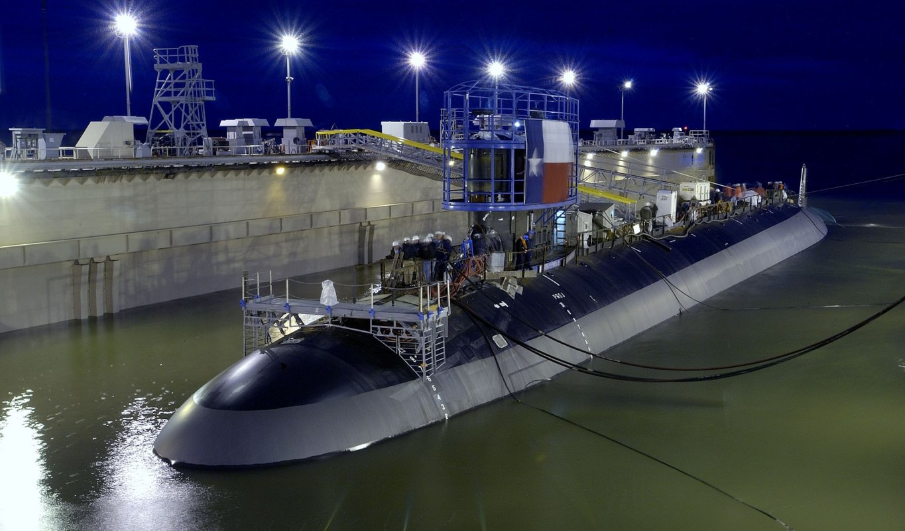 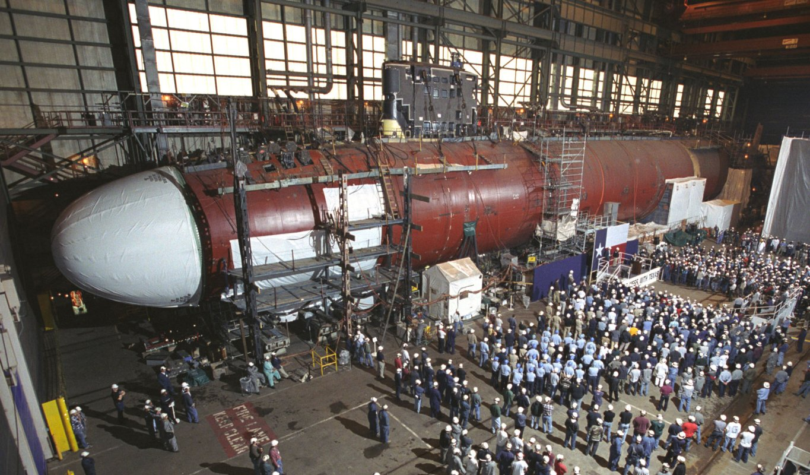 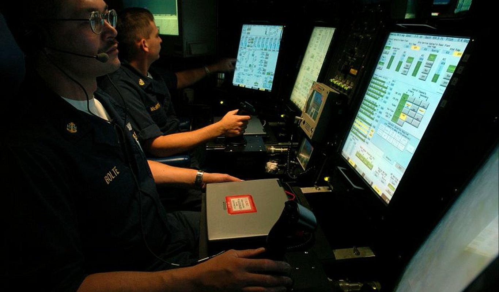 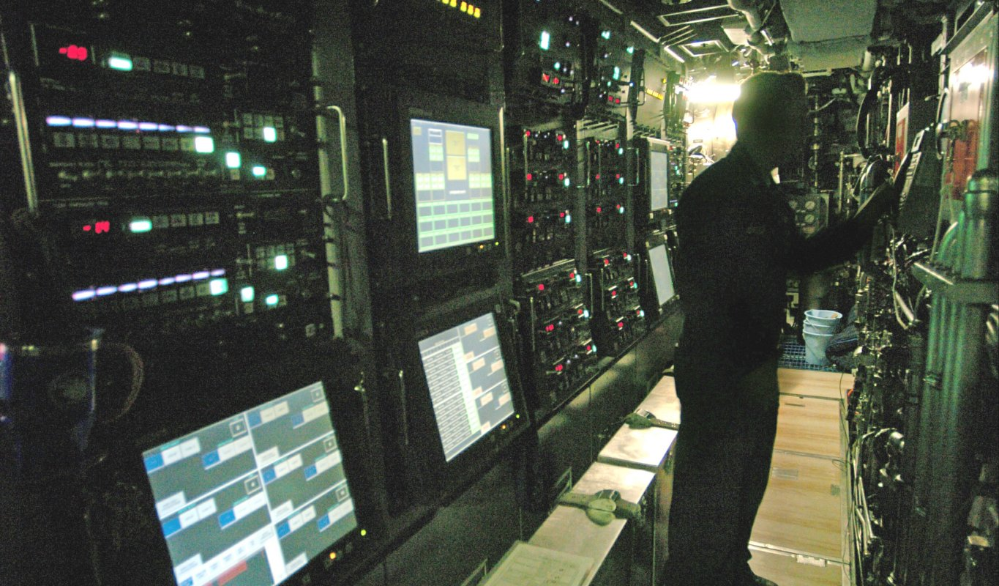 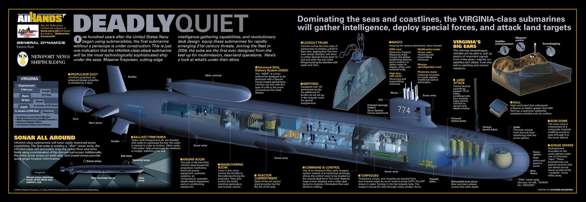 |


World-wide Aircraft Carriers - AEGIS Vessels of the World - The Rising Sea Dragon in Asia - ROCN vs PLAN - 25 Favorite US Navy Pics
| ||||
|
Jeff Head is a member of the US Naval Insitute who has many years experience in the power, defense, and computer industries. He currently works for the federal government helping maintain regional infrastructure. He is the author of a self-published military techno-thriller called, "Dragon's Fury," that projects a fictional third world war arising out of current events. Learn more about that series by clicking on the picture of the novel cover below:
 DRAGON'S FURY-World War against America and the West |
||||
 |
View Guestbook |
Sign Guestbook |
|
|
JEFFHEAD.COM Hit Counter

Jeff Head Military Sites Hit Counter